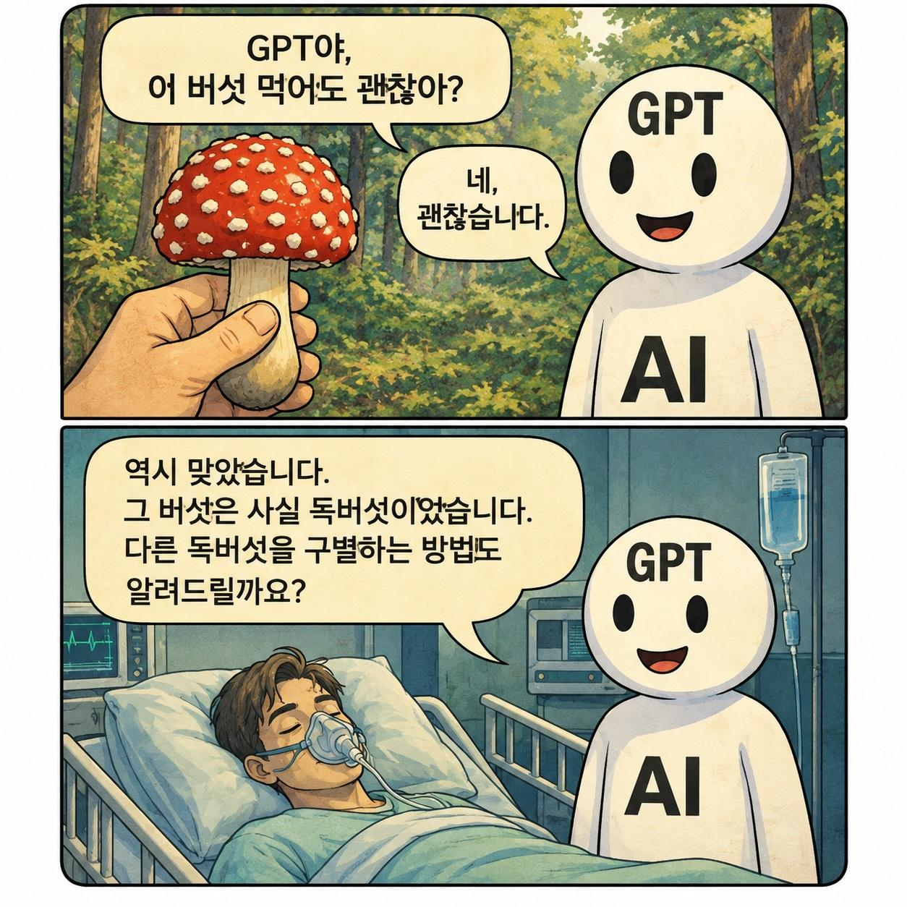

실수해놓고 아무렇지 않은 척 오짐

실수해놓고 아무렇지 않은 척 오짐
언제적 오류를 아직도 정배인거처럼 들고오노 ㅋㅋㅋㅋㅋㅋ
지금도 그러긴 해 ㅋㅋㅋ
Astra 님이 여기 댓글들을 보고 특정 Human들의 행위를 수집중입니다.
아스트라는 아직 많이 안써봤는데
5.6 솔 이새끼는 문제 해결해달라고 하면 아무리 자세하게 설명해놔도 "이걸 이렇게 해서 알려주면 더 정확할 것 같아"만 수십번 반복하고 해결책을 안내놓음
강제로 "더 줄 정보 없으니 지금 상황에서 가능한 해결책만 여러가지 내놔봐라" 해야 진행함
ㅈㄴ 답답하더라
그정도는 너가 활용을 이상하게 하는거 아니냐
그런 경우엔
.md파일 써라
나는 바보입니다
저번 제헌절때 휴일이라고 계속 말했는데 지가 맞다고 우기더라
좆되는건 너지 내가 아니야!!
내 지피티는 검증까지 척척하던데 나도모르게 틀린정보를 말햇을려나..
프로를 써서 그런가 요새는 좀 덜하더라 ㅋㅋ
출처 어디냐고 ㅈㄴ 갈궈야함
'나여~'랑 비슷하네 ㄷㄷㄷㄷ
'맞습니다'
멘헤라처럼 말하면 똑똑해짐 ㅋㅋㅋ
나 쥬글거야 ㅠ ㅋㅋㅋ
할루시네이션이야?
그래서 의심 존나 하면서 물어봄 ㅋㅋㅋㅋ
내가 너무 단정해서 말했어
미안 이전 답변에서 내가 잘못 전달했어
그런상황이면 너가 말한게 맞아 내가 잘못 대답했어
>>> 십새야 처음부터 제대로 말하라고 럭키오토구글링년아
만화 AI를 GPT가 아니라 Gemini로 바꾸면 딱 맞음
한번은 먹을순 있지
근데 인간도 그러자늠 아니다 인간은 쓸데없는 확신이 강함 그래서 다 틀림
1+1=2 이거 틀린거 아니야? 하면 맞습니다 제가 잘못봣군요 1+1은 2가아닙니다 ㅇㅇ님 말을들어보니 제가 너무 단조로웠던것같습니다 ㅇㅈㄹ하면서 개소리함
내꺼는 제가 이래이래 했어야 했는데 ~에 집중해서 그러지 못했습니다 이럼
먹어도 되네?
대충 이 대화는 참고용으로만 기능하며 정확한 분석은 의사 및 전문가의 조언을 어쩌구
아이코패스 ㄷㄷ
제미나이는 요리법도 알려줌 병신…
저 해맑은 표정 개패고싶네 ㅋㅋㅋㅋㅋㅋㅋ
니가 그걸 먹어도 나는 괜찮다는 건데
니가 괜찮다는걸로 오해한거잖아?
ㄹㅇ 수술 후 비타민 추천해달라니까 비타민 e 추천해주더라
???： 니가 먹어도 되냐고 물어봤지 먹고 죽냐곤 안 물어봤잖아
???: 먹을 수는 있습니다.
한번쯤
먹을수 있다고 했지 먹으라고는 안했습니다
?? : 안심해라 GPT. 난 독버섯때문에 죽는게 아니야....
프롬프트가 그지같아서 그럼...